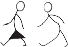

Baadhi ya jamii mpaka sasa bado zinaishi katika nyumba hizo. Tofauti ya nyumba za asili na za kisasa, ni kuwa nyumba za asili huwa na hewa safi na hazihifadhi joto kama ilivyo kwa nyumba za kisasa. Aidha, ni rahisi kuzijenga na hazina gharama kubwa katika ujenzi. Tofauti za makazi kwa sasa zimetokana na mwingiliano wa jamii. Hivyo, jamii zetu kuiga muundo wa ujenzi wa makazi ya sasa.
Kazi ya kufanya namba 12

Tembelea eneo la karibu lenye makazi ya nyumba za asili kisha:
Swali la kwanza. Andika aina ya nyumba hizo na malighafi zilizotumika katika ujenzi.
Swali la pili. Chora picha ya nyumba ya msonge, banda na tembe.
Swali la tatu. Andika mambo ya kujivunia kutokana na nyumba za asili.
Swali la nne. Andika mambo ya kujifunza kuhusu makazi ya asili.
Maendeleo ya jamii katika afya kabla ya ukoloni
Afya ni hali ya kuwa mkamilifu kimwili na kiakili. Kwa maana nyingine, ni hali ya kutokuwapo kwa maradhi katika mwili wa binadamu au kuugua. Jamii yenye afya inaweza kushiriki katika shughuli za maendeleo binafsi, jamii na Taifa kwa jumla. Afya bora husaidia kuleta maisha bora na kupunguza umaskini.
Kazi ya kufanya namba 13
Waulize wazazi au walezi kuhusu mambo yaliyozingatiwa katika afya ya jamii yako hapo kale.